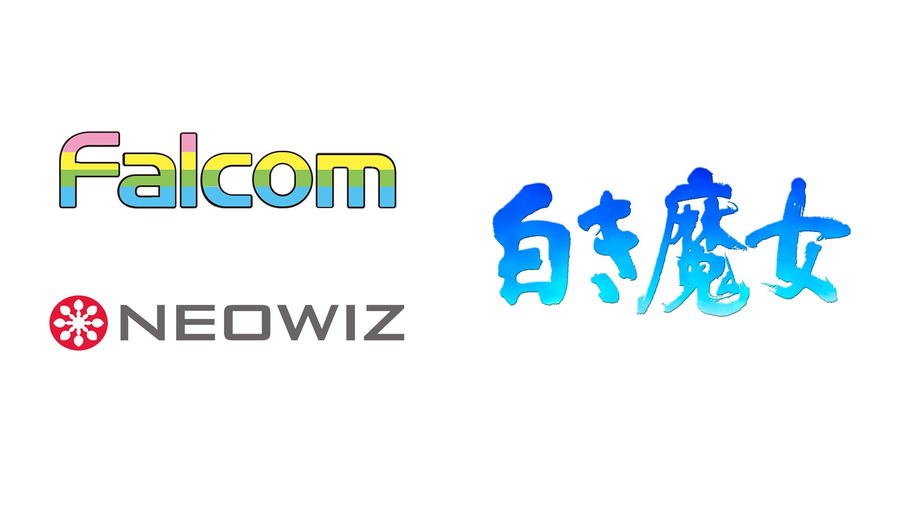
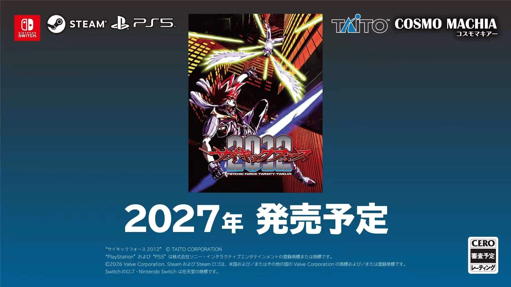
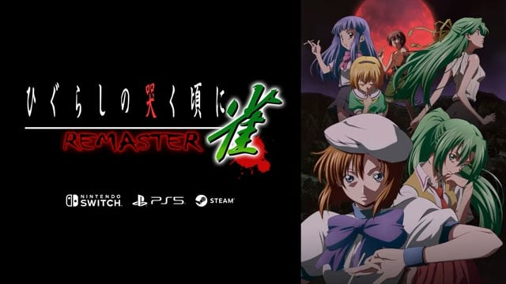

🔥🔥🔥
英雄传说III：白发魔女（The Legend of Heroes III: Prophecy of the Moonlight Witch）
NEOWIZ 宣布与日本 Falcom 签署 IP 协议：获《英雄传说III：白发魔女》主机 / PC 开发与全球发行权；形态未锁，无发售日。
- 日期
- 2026-09-16
- 库
- 游戏行业 · IP 授权
- 状态
- 新作开发发行公布
今日主线是 英雄传说III：白发魔女 IP 授权（NEOWIZ×Falcom）与独立轴 Cloudbreaker 发售、异病侦探 定档；AI 侧 Gemini 3.8 Live（专用语音档，非一般旗舰）+ Salesforce in Claude（37 Skill + MCP，可推荐）。二次元：蔚蓝档案韩/国际服 Ex.传承探求第2章。行业另记超能力大战 2012 回归、007 First Light Switch 2 延期、Game Pass 波。今日无新旗舰；今日有新 MCP/Skill 推荐。游戏开发空库未出 Tab。Capcom Spotlight 今晚未播不写片单。
判定：IP 授权 + MCP 推荐 + 独立发售/定档扛主线；Live 档进模型轴但写清「非旗舰」。不复述金刚狼 / tinyBuild / Tenebris / SideM / 原神 7.1。不发涉政。游戏开发空库未出 Tab。
最高 Attention 落在英雄传说III：白发魔女 IP 授权与 AI 双条（Gemini Live 非旗舰 + Salesforce in Claude 可推荐）；其后为独立发售/定档与行业回归/延期/分发。游戏开发空库未出 Tab。今日无新旗舰；今日有新 MCP/Skill 推荐。
判定：三库同出；展会片单空（Spotlight 未播）。游戏开发空库未出 Tab。
NEOWIZ 宣布与日本 Falcom 签署 IP 协议：获《英雄传说III：白发魔女》主机 / PC 开发与全球发行权；形态未锁，无发售日。
Google DeepMind 推出实时语音对话专用档 Gemini 3.8 Live 与 Live Extended Thinking；经 Live API 可用。不当今日一般文本旗舰。
Anthropic×Salesforce 将「Salesforce in Claude」推入付费计划 beta：37 销售 Skill + marketplace 可装 Salesforce MCP。
Ballast Games《Cloudbreaker》Steam 正式发售：库存格子拼装飞艇引擎 × Bullet Heaven roguelite。
Thermite × PHOSEPO × Smilegate《异病侦探》定档 2026-11-05 Steam / STOVE；展会口碑后硬锁日。
Cosmo Machia × TAITO：经典 360° 空战格斗《超能力大战 2012》将于 2027 登陆 PS5 / Switch / Steam。
IO Interactive：Switch 2 版《007 First Light》再延至 2027 年 3 月；其他平台已发售。
Xbox Wire 第二波：Gears of War: E-Day 10/6 Day One、Minecraft Dungeons II 9/29 Day One、Dune: Awakening 9/22 等。
韩服/国际服 9/15：主线第二部 Ex.「传承探求」第2章 + ★3 睦月／春香（礼服）；国服未见同步。
今日无新旗舰。今日有新 MCP/Skill 推荐：Salesforce in Claude（37 Skill + Salesforce MCP）。模型发布轴另有 Gemini 3.8 Live / Live Extended Thinking（实时语音专用档，非一般旗舰）。
不把 Gemini Live 写成今日旗舰；不复述 Astra / Fable·Mythos / Gemini 3.8 Flash / Agents API+GPT-Live-1 / Baseten·AWS MCP。不发涉政 threat-intel。
Google DeepMind 于 Sep 15 推出 Gemini 3.8 Live 与 3.8 Live Extended Thinking：面向近实时语音对话与语音智能体的专用档，开发者经 Live API 可用；Extended Thinking 可边说边做后台多步推理。定位实时语音/Live，不当今日一般文本旗舰（现役文本旗舰仍为 Gemini 3.8 Flash）。

关注度 · 🔥🔥🔥。来源：Google Blog · Google Developers · DeepMind · Gemini API Docs。
Anthropic 与 Salesforce 联合将「Salesforce in Claude」插件推入付费计划 beta：在既有 Salesforce 权限下把账户/商机/管道拉进 Claude，捆绑 37 个销售 Skill，并提供可经 marketplace 安装的 Salesforce MCP。默认写回需用户批准。

关注度 · 🔥🔥🔥。来源：Claude Blog · Claude Help · Claude Connectors。
窗内主线：蔚蓝档案韩服/国际服主线 Ex.「传承探求」第2章 + 礼服新学生。不复述原神 7.1 / SideM / 鸣潮 3.7 窗外官宣；星铁 4.6 前瞻昨窗官宣不升格。
判定：单条达门槛出 Tab；国服不写成同步开门。日历活动（ZZZ/终末地 AIC）不升格。
Nexon 于 9/15 更新《蔚蓝档案》韩服（国际服同日口径）：主线第二部 Ex.「传承探求」第2章上线，并追加★3「睦月（礼服）」「春香（礼服）」精选招募；总力战新 BOSS「油桶蟹」定档 9/22。
关注度 · 🔥🔥。来源：游戏东亚 · Newspim · Inven Global · Cosm Game。
行业主线：英雄传说III：白发魔女 IP 授权 + 独立轴 Cloudbreaker 发售 / 异病侦探 定档；另记超能力大战 2012 回归、007 First Light Switch 2 延期、Game Pass 波。今日有独立游戏观察新增；展会片单未出（Capcom Spotlight / TGS 未播）。
判定：授权+独立双主线；tinyBuild / 金刚狼 / Tenebris 不复述。Spotlight 播后再出片单。
NEOWIZ 宣布与日本 Falcom 签署 IP 协议：获《英雄传说III：白发魔女》主机 / PC 开发与全球发行权；形态未锁（称忠实再现原作叙事与氛围），无发售日。

Cosmo Machia 携手 TAITO：街机/主机经典 360° 空战格斗《超能力大战 2012》将于 2027 登陆 PS5 / Switch / Steam；TGS 2026 预告片已出，具体形态（移植/重制深度）未细拆。

关注度 · 🔥🔥。来源：Gematsu。
IO Interactive：Switch 2 版《007 First Light》由原定 2026 夏窗口再延至 2027 年 3 月（精确日稍后）；称用于打磨 Switch 2 性能。PS5 / Xbox / PC 版已于 5/27 发售。
关注度 · 🔥🔥。来源：Gematsu。
Xbox Wire 公布第二波 9–10 月 Game Pass：亮点含《Gears of War: E-Day》10/6 Day One、《Minecraft Dungeons II》9/29 Day One、《Dune: Awakening》9/22，以及 9/16 起 Marvel Cosmic Invasion / Planet of Lana II / Routine 等。
City Connection 公布麻将冒险《寒蝉鸣泣之时 Jong》HD 重制：PS5 / Switch / Steam，2027 日本；支持日/繁中/简中。Steam 店名仍英文，标题用系列官方译。

加拿大双人工作室 Ballast Games《Cloudbreaker》Steam 正式发售：库存格子拼装飞艇引擎 + Bullet Heaven roguelite；截稿约 6 评（5+/1−），机制新意达独立门槛。

关注度 · 🔥🔥。来源：Steam · Games Press。
Thermite Games × PHOSEPO × Smilegate《异病侦探》定档 2026-11-05 Steam / STOVE：认知障碍改写证物与证词的本格推理；Busan Indie Connect / Gamescom 2026 展会口碑后硬锁日。